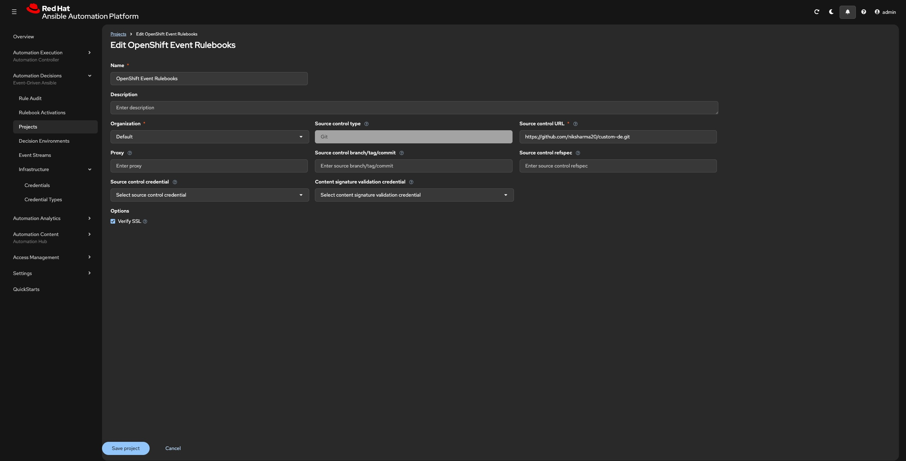
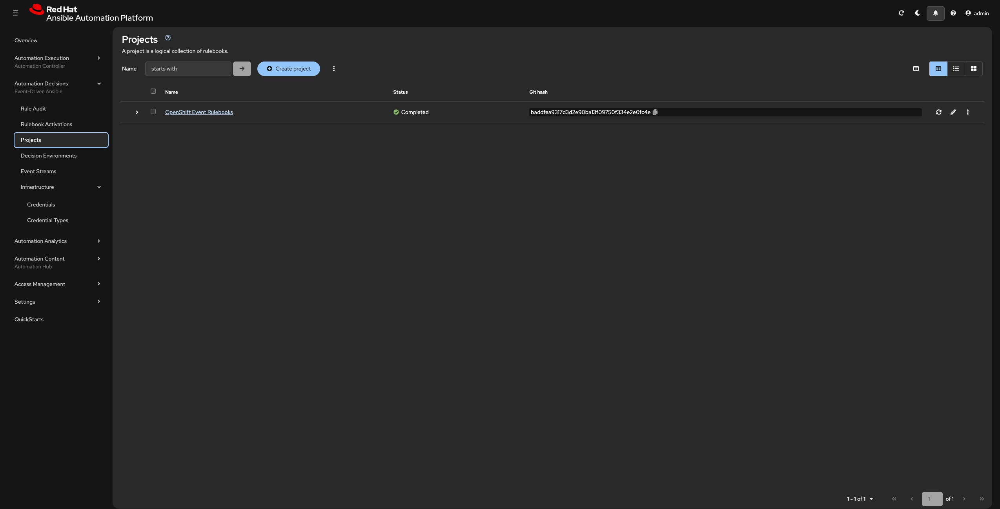
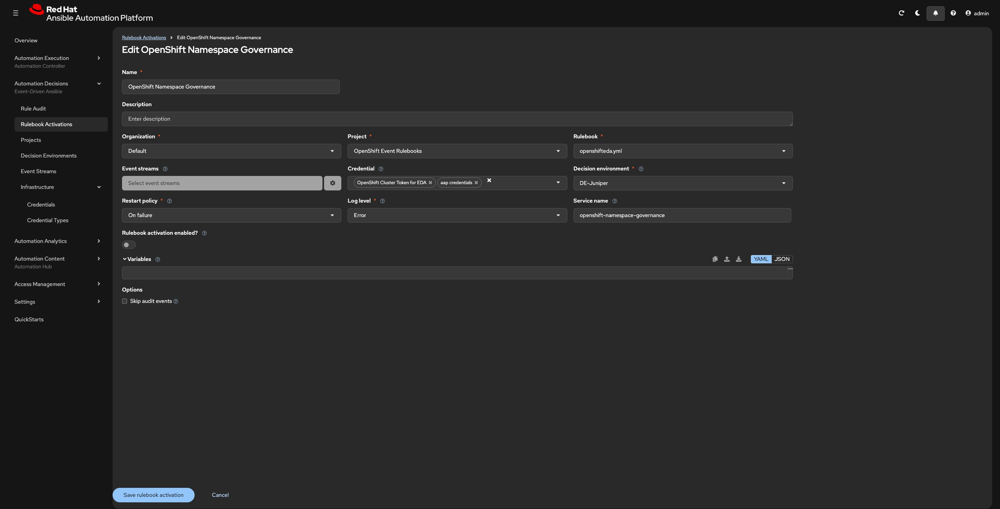
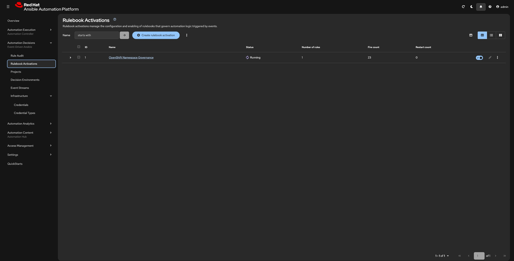
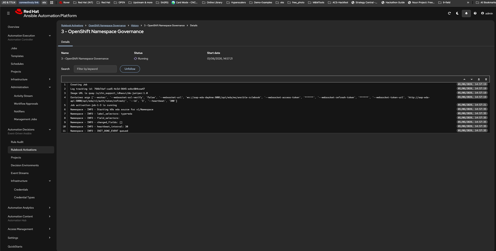

EDA Project and Rulebooks Definations
A Project in Event Driven Ansible(EDA) is a connection to a Git repository that contains your rulebooks. EDA syncs the repo and makes the rulebooks available for Rulebook Activations.
Prerequisites
Before you start you need:
1) The URL of your rulebooks Git repository.
2) If the repo is private — a Git credential (Personal Access Token).I have created a public repo for the workshop with a rulebook, that we will be using for the workshop.
repo url: https://github.com/niksharma20/custom-de.git
Projects
Creating a Project in Automation Decisions (EDA)
Step 1: Navigate to Projects
Automation Decisions → Projects → Create Project
Name: OpenShift Event Rulebooks
Organization: Default
Source control type: Git
Source control URL: https://github.com/niksharma20/custom-de.git
Verify SSL: On

Step3: Verify the sync (Success looks like below).

If all was successful in previous step, EDA should have scanned the repository for .yml files that match the rulebook format and makes them available in Rulebook Activations. Your rulebooks in the rulebooks/ directory will appear as selectable options when creating an activation.
Rulebooks
A Rulebook Activation is what actually runs your rulebook. It combines the Project, Decision Environment, and Credentials into a running process that streams events from OpenShift.
Prerequisites
Before you start you need:
✅ OpenShift credential (OpenShift Cluster Token for EDA)
✅ AAC credential (aap credentials)
✅ Decision Environment (DE-Juniper)
✅ Project (EDA Rulebooks) — synced successfully
Creating a Rulebook Activation in Automation Decisions (EDA)
Step 1: Navigate to Rulebook Activations
Automation Decisions → Rulebook Activations → Create Rulebook Activation
Name: OpenShift Namespace Governance
Organization: Default
Project: OpenShift Event Rulebooks
Rulebook: openshifteda.yml (select from the drop down)
Credential(s): "OpenShift Cluster Token for EDA" "aap credentials"
Decision environment: DE-Juniper
Restart policy: On Failure
Enabled: Yes

Step3: Verify the Activation is Running (Success looks like below).

Step4: Check the Logs
Automation Decisions → Rulebook Activations → OpenShift Namespace Governance (Running with a green indicator) → History → latest activation → logs

**Let's move to configuring the Automation Controller**